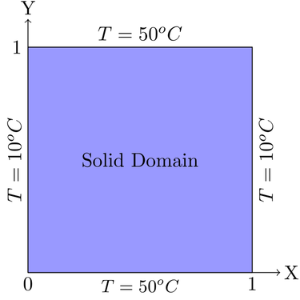
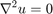
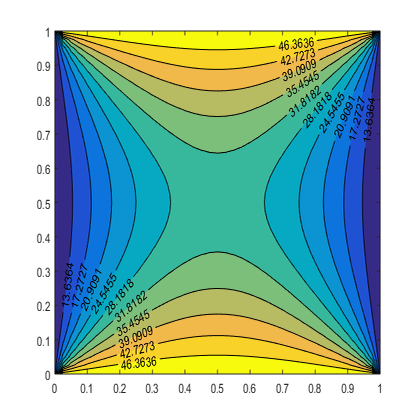

%ADI method with the implementation of TDMA is used to solve a 2D heat %conduction with Dirichlet B.C at the right side (0<y<1 at x=1; u=10) %Dirichlet B.C. at left(0<y<1 at x=0; u=10), Top(0<x<1 at y=1; u=50) and Bottom(0<x<1 at y=0; u=50) %Author Md Rysul Kabir %Date 4/29/18

EQUATION TO BE SOLVED FOR THE PROBLEM:
Steady State Diffusion Equation, 
function m = ADI_cond_dirichlet mx=40; my=40; nx=mx+1; ny=my+1; lx=1; ly=1; x=linspace(0,lx,nx); y=linspace(0,ly,ny); u=zeros(nx,ny); u(1:nx,1:ny)=30; u(1:nx,1)=50; u(1:nx,ny)=50; u(1,1:ny)=10; u(nx,1:ny)=10; %B.C uiter=u; unew_iter=u; errtol=1e-6; error=2*errtol; iter=0; itermax=2000; while ((error>errtol)&&(iter<itermax)) %Horizontal sweep a(1:nx)=1; b(1:nx)=-4; c(1:nx)=1; d(1:nx)=0; for j=2:ny-1 for i=2:nx-1 d(i)=-(uiter(i,j-1)+uiter(i,j+1)); end a(1)=0; b(1)=1; c(1)=0;%Dirichlet B.C a(nx)=0; b(nx)=1; c(nx)=0;%Dirichlet B.C d(1)=u(1,j); %required for dirichlet b.c d(nx)=u(nx,j); %required for dirichlet b.c unew_iter(1:nx,j)=solver_tdma(nx,a,b,c,d); end uiter=unew_iter; %Vertical sweep for i=2:nx-1 a(1:ny)=1; b(1:ny)=-4; c(1:ny)=1; d(1:ny)=0; for j=2:ny-1 d(j)=-(uiter(i-1,j)+uiter(i+1,j)); end a(1)=0; b(1)=1; c(1)=0;%Dirichlet B.C a(ny)=0; b(ny)=1; c(ny)=0;%Dirichlet B.C d(1)=u(i,1); %required for dirichlet b.c d(ny)=u(i,ny); %required for dirichlet b.c unew_iter(i,1:ny)=solver_tdma(ny,a,b,c,d); end error=sum(sum(abs(unew_iter-uiter)))/sum(sum(abs(unew_iter))); uiter=unew_iter; iter=iter+1; %To count the number of iteration for a certain initial value end m=uiter'; [C,H]=contourf(x,y,m,10,'k-');colormap; clabel(C,H,'LabelSpacing',500); end